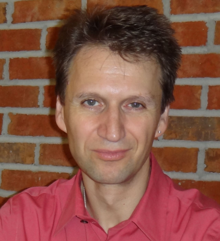

Department of Computer Science, Stony Brook University
Professor, Computer Science, Stony Brook University
Senior Scientist, Brookhaven National Laboratory
Director, Visual Analytics and Imaging (VAI) Lab
Research Interests: Visualization, Explainable AI, Visual Analytics, Data Science, Big Data, Virtual & Augmented Reality, Medical Imaging, High Performance Computing
Publications per year, 1993 → 2025
"[A short personal statement in your own words.]"— Klaus Mueller
300+ papers, 1993–present, plus the full archive on Google Scholar.
Current students and 60+ alumni now at Meta, Google, Amazon, and academia.
Visualization, medical imaging, HCI, GPU programming, data science.
Full academic biography, appointments, awards, and service.